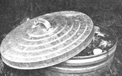

Flies, stray pets, and rats are attracted to compost piles like mosquitoes to murky water . . . especially when the rotting heap in question contains raw garbage. Fortunately, we've never had a rat problem, but we used to be troubled by all other kinds of pests whenever we put kitchen wastes on our compost pile.
The heap itself consisted mainly of dried vegetation and aged manure that'd been run through our shredder-grinder to speed decomposition. And these wastes-alone-didn't draw many pests. Any time we put fresh garbage on the mound, however, we soon saw our backyard invaded by cats, dogs, and flies ... and the vastly increased "earthy" smell wrinkled our neighbors' noses.
At first, we attempted to remedy the situation by putting a fence around the compost pile. This discouraged a few of the smaller dogs in the neighborhood ... but it did nothing to eliminate the other pests (let alone the pungent odor).
We also tried burying the garbage in the pile ... a technique that took care of the flies, cats, and wrinkled noses (and all but the hungriest hounds). I wasn't fond of having to dig into the compost every time I wanted to dump my garbage, though, and the fence we'd erected earlier didn't make my shoveling any easier.
And then we visited my husband's Uncle Byron (who happens to be an avid organic gardener with more years of experience than I have fingers and toes). And Uncle Byron showed us how he turned garbage into fertilizer without attracting vermin: He simply loaded his refuse into either of two bottomless galvanized-steel trash cans which he'd buried upright in the ground (only the tops of the cans were visible).
"All I have to do is put my garbage in one trash can until it begins to fill up," Uncle Byron explained, "which usually takes a few months. Then I start putting garbage in the second barrel. By the time that container's full, the material in the first can has been converted to compost and is ready to be used in the garden."
Uncle Byron showed us the contents of the two buried trash receptacles. One was filled with what looked-and smelled-like fresh household garbage ... while the other contained beautiful, rich, humus-like material. Not far away was a compost pile which-my husband's uncle told us-contained "digested refuse" from the second can. It was completely pest- and odor-free.
Needless to say, when I got home I was anxious to try Uncle Byron's "double barrel" approach to composting. First, I rounded up a pair of trash cans and made an opening in the bottom of each. (The best way to do this is to have a welder cut the entire bottom out with a torch. Alternatively, several large punctures will suffice for drainage purposes.) Then I buried the two barrels in the ground, leaving just enough of their rims showing so that I could fit snug lids on them (see photograph). And without further adieu, I began to empty my kitchen garbage into one of the two steel compost "Pits".
The virtues of the new system were immediately apparent. Cats, dogs, and flies were shut out ... while odors were shut in. At last, no more pests! Maggots did appear once-after we put fish innards in the can-but the heat generated by natural biodegradation killed off the little varmints before they could develop into adult flies. (Various "trash can" insecticides exist, but I can see nothing to recommend them. And besides, even though Maggots ARE repulsive I don't mind them spending their short lives working the soil in my subterranean composter!)
It seemed like forever (actually, it was four months) before that first small can was completely full. The container might be brimming with garbage one day ... and it might be down to a third of that amount a few days later. (in hot weather, the wastes seemed to "melt" like ice.) Finally-when the barrel was nearly filled to capacity, and stayed there-I mixed in a shovelful of manure to help speed decomposition ... then I closed the lid tight and let nature take its course.
In the meantime, I started dumping garbage into the second can. And-Sure enough-long before it was full, the first container's contents had turned into rich, black compost, ready to be spread on the garden or used to top-dress our flowering plants.
A bonus we hadn't counted on, by the way, was earthworms. The little squirmers were attracted to the barrels in droves and-after coming in through the openings in the cans' bottoms-kept themselves busy working the rotted garbage into a black, meallike fertilizer (which proved, once again, that worms are every bit as much a blessing to gardeners as to fishermen).
We're happy to report-thanks to our "underground composter "-that we no longer have any problem with pests, our neighbors never look at us with wrinkled noses anymore, and we now have a garbage disposal that'll never choke on a bone or add a cent to our utility bill!
|
 |
|
|